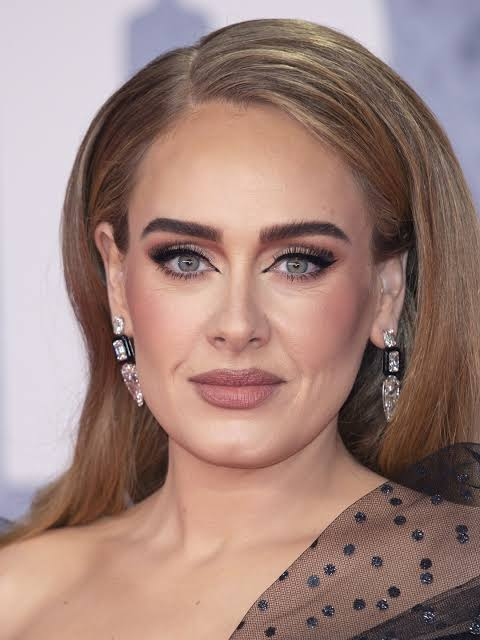

It's me "Marouane Touzani"
I made this blog just for posting some pictures about art, I love music!
Old Piano
This picture by "Vladislav Nahorny"
Old pianos often have handcrafted wooden parts and unique sounds.
Some antique models are over 100 years old and still playable.
Their tone becomes warmer with age, giving them special character.

This Picture Cuptred in 27/2/2021
Adele
This picture by "Simon Emmett"
Adele's album 21 is one of the best-selling albums of all time.
She wrote it after a breakup, making it deeply emotional.
Her voice is often described as soulful and timeless.

This Picture Cuptred in 15/3/2019
Kendrick Lamar
This picture by "Alen Moley"
Kendrick Lamar won the Pulitzer Prize for Music in 2018.
He was the first rapper to ever win it for a non-classical, non-jazz album (DAMN.).
His lyrics often explore race, politics, and personal struggle.

This Picture Cuptred in 28/6/2018
L'morphinr
This picture by "Amine Khaldi"
L’morphine is known for his raw, poetic lyrics in Darija.
He blends emotional storytelling with street realism.
His tracks often talk about pain, survival, and inner conflict.

This Picture Cuptred in 23/10/2012
Queeen
This picture by "Richard E. Aaron"
Queen's "Bohemian Rhapsody" has no chorus and mixes opera with rock.
Freddie Mercury wrote most of it, and it took 3 weeks to record.
It's now one of the most iconic songs in music history.

This Picture Cuptred in 1/1/2009
About ME